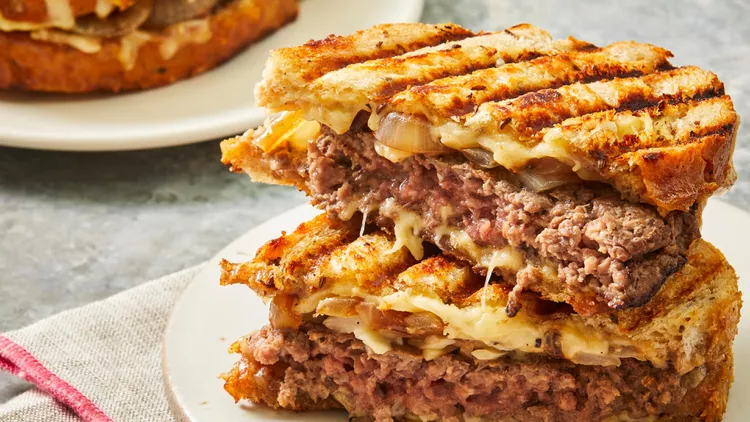

Patty melt recipe

Patty melt description
A patty melt is a delicious sandwich consisting of a grilled hamburger patty, typically
seasoned and cooked to perfection, topped with caramelized onions, melted cheese
(often Swiss or American), and sandwiched between two slices of toasted bread,
usually rye or sourdough. The sandwich is then grilled until the bread is crispy and
golden brown, and the cheese is gooey and melted.
It's a classic comfort food option that combines the elements of a burger and a
grilled cheese sandwich, creating a savory and satisfying meal experience. Some
variations may include additional toppings such as sautéed mushrooms or bacon,
adding even more flavor to this already tasty dish.
Ingredients needed
- 8 medium slices sweet onion (such as Vidalia®)
- 1 tablespoon balsamic vinegar
- 1 pound extra-lean ground beef
- ¼ teaspoon salt
- ¼ teaspoon freshly ground black pepper
- 1 serving cooking spray
- 8 (1 ounce) slices rye bread
- 3 tablespoons Dijon-mayonnaise blend (such as Hellman's® Dijonnaise™)
- 1 cup shredded reduced-fat Jarlsberg cheese
Steps to forming the perfect patty melt
- Arrange onion slices on a plate and drizzle vinegar over top. Divide beef into 4
equal portions, shaping each into a 1/2-inch thick patty. Season patties with salt
and pepper.
- Heat a large grill pan over medium heat. Coat the pan with cooking spray and add
onion. Cover and cook for 6 minutes, flipping halfway. Remove from pan, cover, and
keep warm.
- Heat the grill pan over medium-high heat. Coat with more cooking spray and add patties.
Cook until no longer pink in the centers, about 3 minutes per side. An instant-read
thermometer inserted into the center should read at least 160 degrees F (71 degrees C).
Remove patties to a plate, drain and discard any grease, and wipe the pan clean with a
paper towel.
- Spread Dijon-mayonnaise blend evenly over all bread slices. Layer 4 of the slices with
2 tablespoons Jarlsberg cheese, 1 beef patty, 2 onion slices, and 2 tablespoons Jarlsberg.
Place remaining bread slices mustard-side down on top of the sandwiches.
- Heat the grill pan over medium heat and coat with cooking spray. Add sandwiches to the
pan and place a cast iron or other heavy skillet on top, pressing gently to flatten
sandwiches. Cook until bread is toasted, about 3 minutes per side, leaving the skillet
on top as they cook.